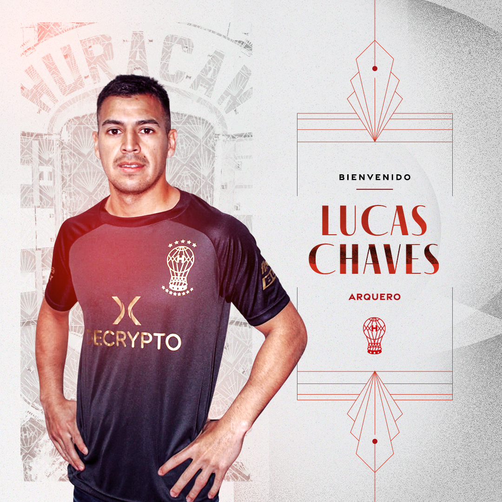
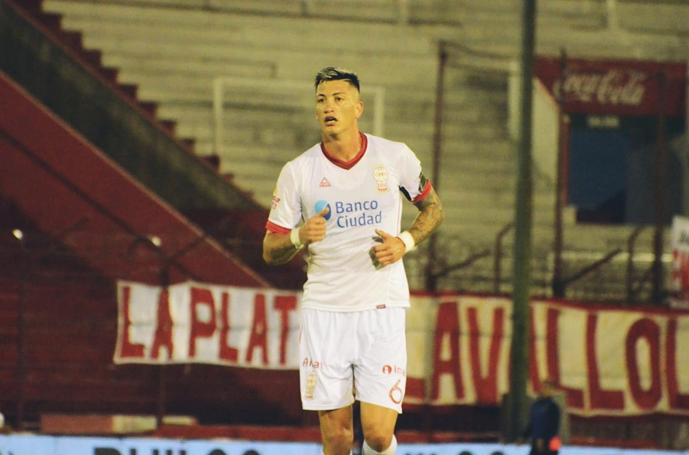
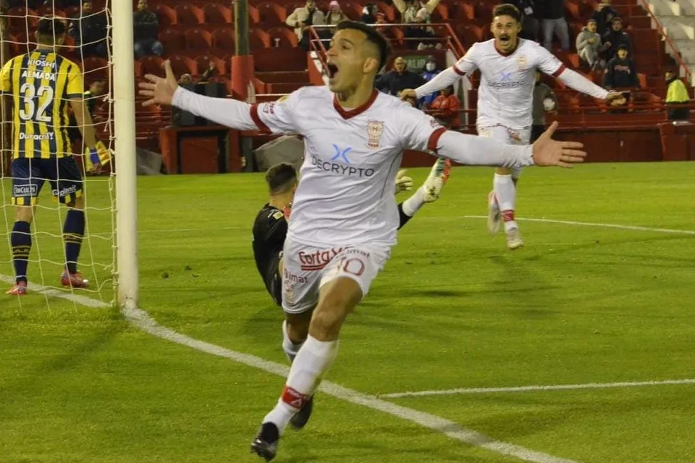
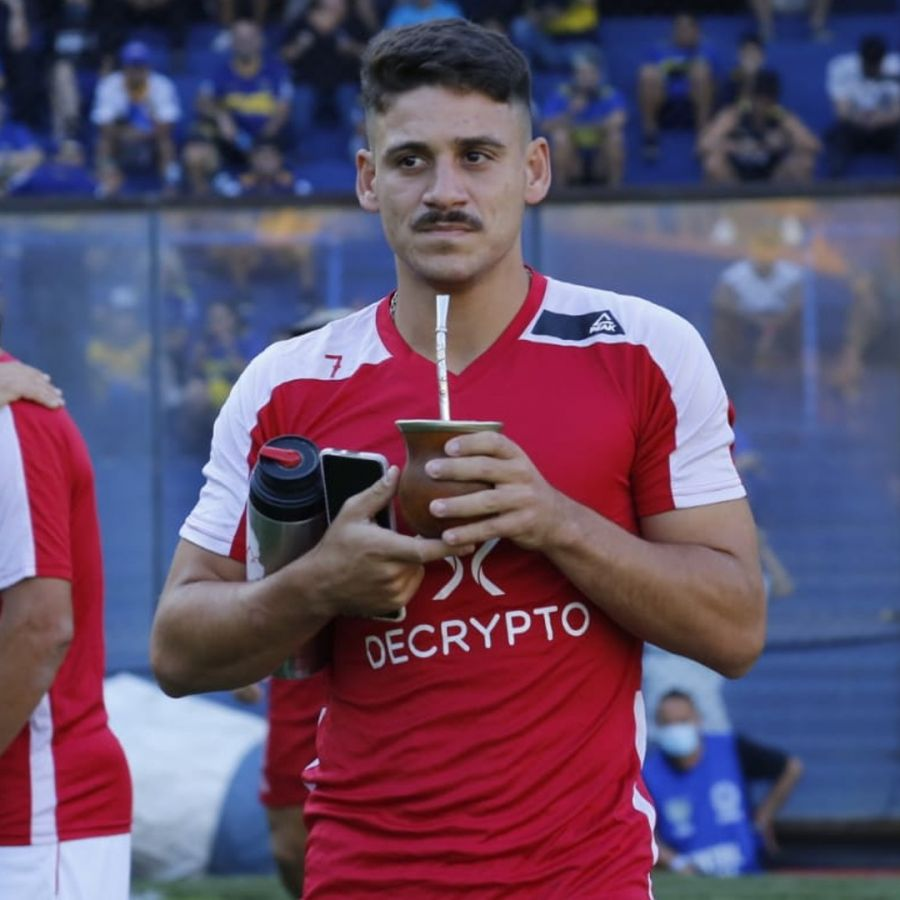

Club Atletico Huracán
114 años de historia.
- Fundacion: 1 de Noviembre de 1908
- 13 Titulos oficiales
- +25.000 socios
- Presidente: David Garzon
- Entrenador: Diego Dabove
El Palacio

Inagurado el 7 de septiembre de 1947, nuestro estadio, el Tomas Adolfo Duco, cuenta con una capacidad de 48.314 espectadores, y unas dimensiones de 105 x 70 mts. Se ubica en Avenida Amancio Alcorta 2570, en el barrio de Parque Patricios.
Nuestros Jugadores
Arquero: Lucas Chaves Defensor: Lucas Merolla 
Mediocampista: Franco Cristaldo 
Delantero: Matias Coccaro 